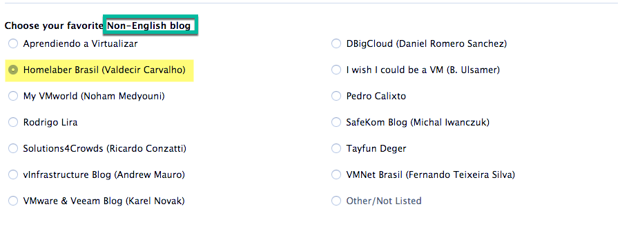
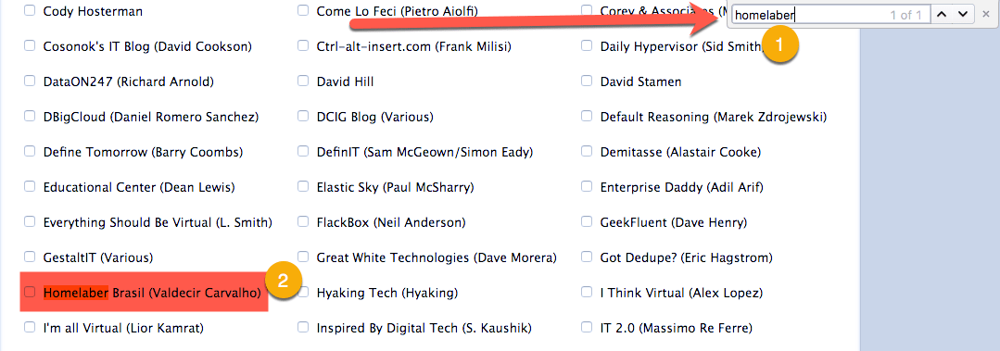
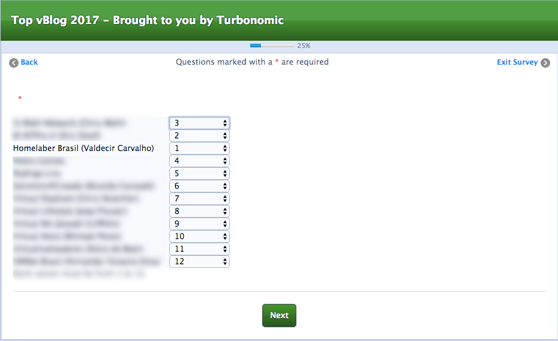
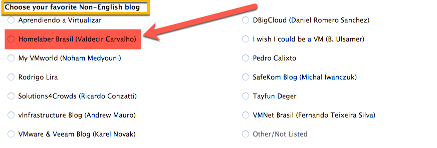
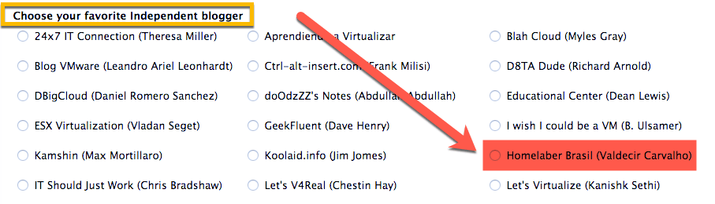
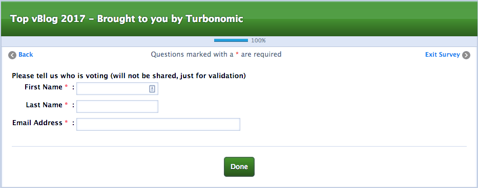
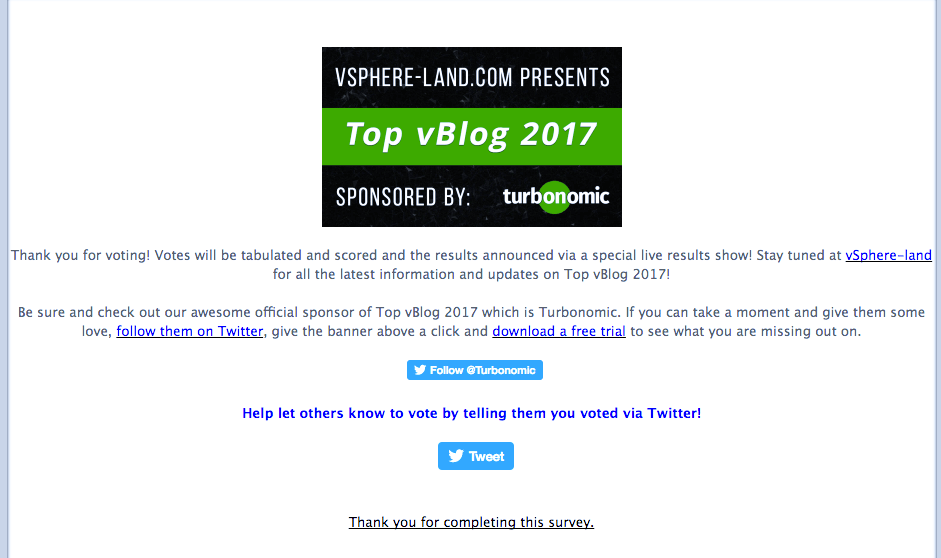

Votações abertas - Top vBlog 2017!
Compartilhe esse post nas redes sociais...
Olá Homelabers!
Vocês sabiam que existe uma “Competição” dos melhores blogs de Virtualização do Mundo?
Sim, meus caros amigos e fiéis leitores desse humilde, mas glorioso blog! Existe!
O pessoal costuma me parar na rua e perguntar: - Mas Valdecir, como eu faço para votar no Homelaber? Esse é o melhor blog sobre Virtualização e Sacanagem Homelab e Backup e Tecnologia escrito em lingua Portuguesa que eu conheço? Como eu faço para votar?
Resposta rápida: Clique aqui! Mas antes, role a tela um pouco mais e leia o restante do post!!!
OS MELHORES BLOGS SOBRE VIRTUALIZAÇÃO DO MUNDO
É fácil: Basta clicar nesse link e escolher os MELHORES BLOGS DE VIRTUALIZAÇÃO DO MUNDO e claro, escolher o Homelaber (use o CRLT+F para achar o nosso nome).
Bom pessoal, agora falando sério. Todos os anos, o Eric Siebert (@ericsiebert) dono do blog vSphere-Land e do vLauchPad, dois renomados blogs blogs sobre VMware e Virtualização, promove um concurso chamado **Top vBlogs **que tem por finalidade, eleger os melhore blogs sobre virtualização do ano. O Eric coloca nesse trabalho uma tonelada de esforço, sem ganhar NADA COM ISSO e sempre conta com a ajuda de parceiros - esse ano, novamente a Turbonomic (clica no link!!!!) está patrocinando o concurso.
Mais uma vez, o blog Homelaber está participando do concurso, essa será a nossa segunda participação. Ano passado, ficamos na posição 248 (de 321 blogs) e em** 12º lugar (entre 16)** na **categoria Favorite New Blog**. Pode não parecer muito, mas **para um blog escrito em Português**, com **pouco mais de um ano e meio de vid**a, é uma super conquista. Eu acabei **ficando na frente** de alguns caras que já estão ai há **bem mais tempo** e ainda **escrevem em Inglês.**
NON-ENGLISH BLOGER
Esse ano, eu pentelhei MUITO o Eric, para criar uma categoria NON-ENGLISH BLOGER, pois assim, diversos blogs sobre virtualização que não são escritos em Inglês, teriam uma chance de se classificarem bem! E não foi que aconteceu? O Homelaber está concorrendo ao Top vBlogs na categoria NON-ENGLISH BLOGER

Na lista existem vários outros blogs Brasileiros e conhecidos de vocês:
* Rodrigo Lira
* Solutions4Crowds - Ricardo COnzatti
* Pedro Calixto
* VMNet Brasil - Fernando Teixeira Silva
Como votar?
Clique no link http://topvblog2017.questionpro.com/ para acessar a pesquisa
* **Você deve escolher 12 de seus blogs favoritos e classificá-los em sua ordem de preferência depois de escolher o seu 12**. Os resultados serão ponderados com um ranking # 1 obtendo 12 pontos e um ranking # 12 obtendo 1 ponto. Os totais dos pontos serão tabulados e, a partir deles, os principais blogs serão determinados.
* Mais uma vez, este ano também temos **votação em categorias especiais** para ajudar a distinguir certos tipos de blogs. **As categorias são independentes da votação geral**, primeiro escolha e classifique seus 12 melhores blogs favoritos em geral e, em seguida, escolha seu blog favorito em cada categoria (não é obrigatório, mas encorajado).
* **A votação funcionará até 30/06**, depois os resultados serão determinados e anunciados em um podcast ao vivo especial comigo mesmo, John Troyer e um convidado especial da Turbonomic.
* Ao selecionar blogs, certifique-se e clique na caixa de seleção, **clicar no nome do blog na pesquisa o abrirá em uma nova janela para que você veja**, use também use o meu **[vLaunchpad](http://thevpad.com/) para ver links para todos os blogs**.
Você pode procurar o nome do blog com CTRL+F

Depois de escolher os seus 12 blogs, você deve classificá-los

Depois escolha os blogs nas categorias especiais. O Homelaber está concorrendo nas categorias NON-ENGLISH BLOG e INDEPENDENT BLOGGER


Preencha os seus dados

FIM! Obrigado pelo seu VOTO!

Compartilhe esse post nas redes sociais...Valdecir Carvalho
Nerd e pai orgulhoso da Mariana e João. Profissional Sênior de TI com foco em arquitetura de infraestrutura e cloud computing. Blogueiro, podcaster, palestrante, amante de comunidades técnicas, fotógrafo aposentado e adora jogos antigos.
#vExpert · #VMUGLeader · #VUGBrasil · #vBronwBagBrasil · #VeeamVanguard